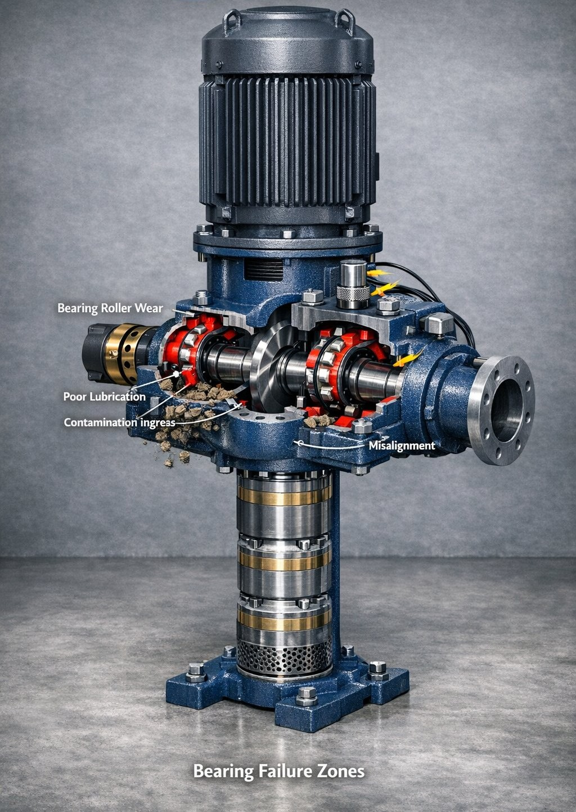
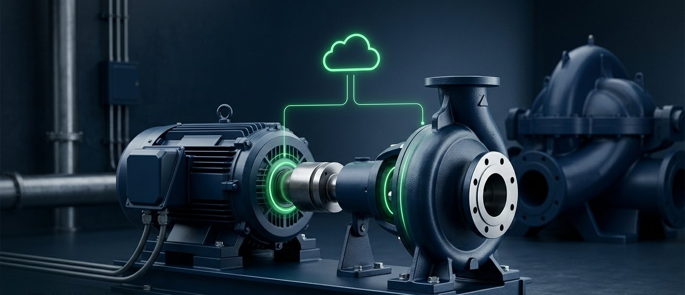
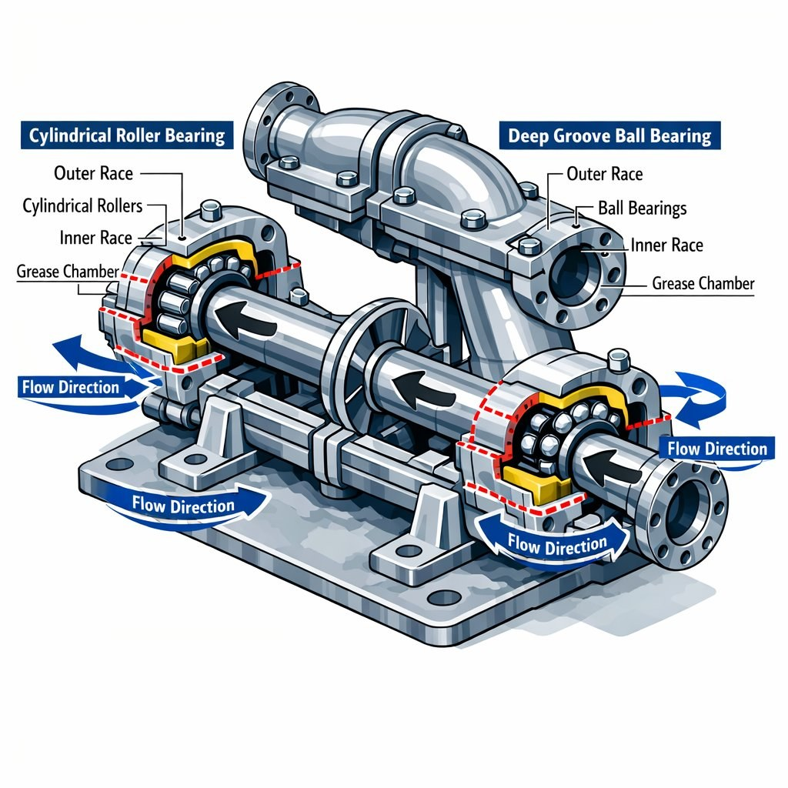

Northwest Indiana
Request a Quote
Condition monitoring for critical pump infrastructure
Wireless, adhesive-mount sensors track vibration, temperature, and current draw on your pumps against a baseline built from that specific machine — early warning of developing fault conditions, for industrial, healthcare, and commercial facilities across Northwest Indiana and Chicagoland.
The cost of not knowing
Every one of these failure modes changes how a pump behaves — its vibration, its heat, the current it draws. Those changes are measurable. Without continuous monitoring, they go unrecorded, and the first indication your team gets is often the failure itself.
Microscopic pitting builds slowly, raising vibration levels measurably while the machine still sounds normal.
Grease breakdown increases friction and heat, accelerating wear on every component downstream.
Grit and debris entering the housing change how a bearing vibrates, and that change can be measured while the pump is still running.
Even slight misalignment changes how a machine vibrates, shifting it away from its own established baseline.
A motor drawing more amperage than its own baseline for the same duty is working harder than it used to. Alongside a change in vibration or temperature, that rise adds to the early-warning picture; on its own it is a measured data point your team can use to evaluate repair versus replacement on your own terms.

How pulse works
01
A wireless vibration and temperature sensor bonds directly to the bearing housing. No wiring, no drilling, no process interruption — install takes minutes per pump.
02
Sensors report vibration and temperature at regular intervals, and a separate current-transformer node reports amperage. Together they establish a baseline signature unique to that machine — including whatever nominal vibration it has developed from its own age, setup, or foundation. The baseline is the machine's own normal, not a generic threshold.
03
When readings move away from that baseline and the pattern persists, your designated team is notified by email with a plain-language observation and a recommendation your qualified maintenance personnel can review — early warning of a developing fault condition. Notifications are automated and informational; what to do about them stays your team's decision.

A motor drawing more amperage than its own baseline for the same duty is working harder than it used to. We trend that change against the machine's established normal. When it moves together with vibration or temperature, it strengthens the automated alert your team receives. On its own, it is an objective, data-backed reference point for your repair-versus-replacement decision. No vendor pressure — just the number. Current monitoring is available on motors up to 75 A per phase. CT current sensors are supplied by Pulse NWI and installed by your licensed electrician — we perform no line-voltage electrical work. And everything Pulse delivers is informational only: our monitoring is never connected to your controls, PLCs, or shutdown systems.
Built for NWI's infrastructure
For manufacturing plants and processing facilities, unplanned downtime means halted lines and missed output. Continuous monitoring gives your team early warning of developing fault conditions, so maintenance decisions are informed by data rather than discovered after the fact.
For hospital central plants, the risk isn't just downtime — it's a redundant pump failing silently, so the N+1 backup you're counting on isn't there when the lead unit trips. Monitoring gives your facilities team a measured record of how each monitored pump is running, for use within your own rounds, maintenance and compliance program.
For water and wastewater utilities, equipment trouble means service interruptions and regulatory exposure. Pulse gives utility teams early warning of developing fault conditions on pumps and motors in dry, above-grade installations, supporting their own maintenance planning.

Get started
Tell us about your facility and equipment. We'll follow up to schedule a walkthrough and scope the right sensor coverage for your pumps.